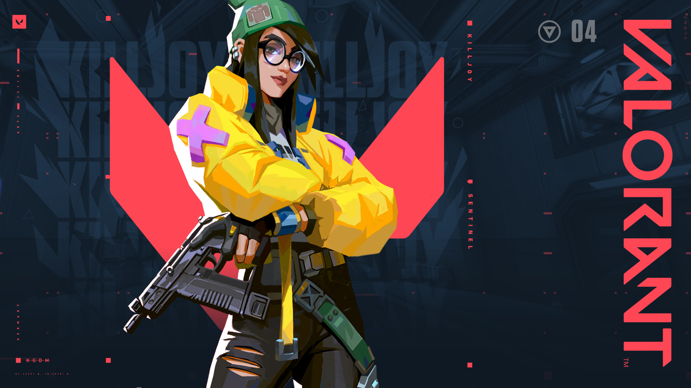
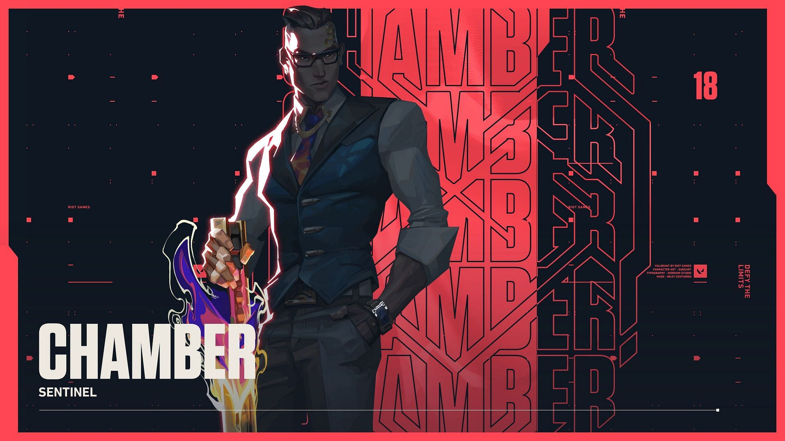
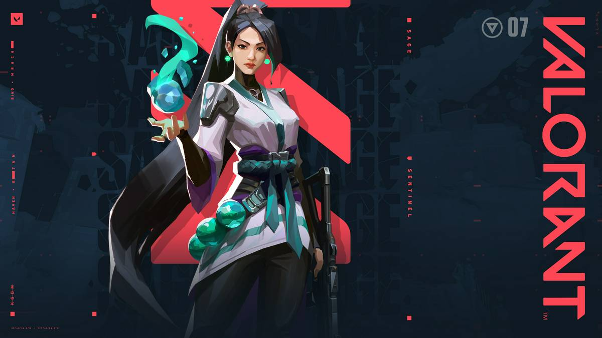

Sentinels - Support and In-Game Leader
Sentinels are defensive experts that have abilities that manipulate the battlefield, lock-down areas of contention and provide utility such as healing. There are currently four Sentinels in VALORANT: Cypher; Killjoy; Chamber; and Sage.
Lets see them one by one :
- Cypher
The Moroccan information broker, Cypher is a one-man surveillance network who keeps tabs on the enemy's every move. No secret is safe. No maneuver goes unseen. Cypher is always watching.

Cypher's abilities are :
- Q - CYBER CAGE
INSTANTLY toss the cyber cage in front of Cypher. Activate to create a zone that blocks vision and slows enemies who pass through it.
- E - SPYCAM
EQUIP a spycam. FIRE to place the spycam at the targeted location. RE-USE this ability to take control of the camera's view. While in control of the camera, FIRE to shoot a marking dart. This dart will reveal the location of any player struck by the dart.
- C - TRAPWIRE
EQUIP a trapwire. FIRE to place a destructible and covert tripwire at the targeted location creating a line that spans between the placed location and the wall opposite. Enemy players who cross a tripwire will be tethered, revealed, and dazed after a short period if they do not destroy the device in time. This ability can be picked up to be REDEPLOYED.
- X - NEURAL THEFT
INSTANTLY use on a dead enemy player in your crosshairs to reveal the location of all living enemy players.
- Killjoy
The genius of Germany. Killjoy secures the battlefield with ease using her arsenal of inventions. If the damage from her gear doesn't stop her enemies, her robots' debuff will help make short work of them.

Killjoy's abilities are :
- Q - ALARMBOT
EQUIP a covert Alarmbot. FIRE to deploy a bot that hunts down enemies that get in range. After reaching its target, the bot explodes, applying Vulernable. HOLD EQUIP to recall a deployed bot.
- E - TURRET
EQUIP a Turret. FIRE to deploy a turret that fires at enemies in a 180 degree cone. HOLD EQUIP to recall the deployed turret.
- C - NANOSWARM
EQUIP a Nanoswarm grenade. FIRE to throw the grenade. Upon landing, the Nanoswarm goes covert. ACTIVATE the Nanoswarm to deploy a damaging swarm of nanobots.
- X - LOCKDOWN
EQUIP the Lockdown device. FIRE to deploy the device. After a long windup, the device Detains all enemies caught in the radius. The device can be destroyed by enemies.
- Chamber
Well dressed and well armed, French weapons designer Chamber expels aggressors with deadly precision. He leverages his custom arsenal to hold the line and pick off enemies from afar, with a contingency built for every plan.

Chamber's abilities are :
- Q - HEADHUNTER
ACTIVATE to equip a heavy pistol. ALT FIRE with the pistol equipped to aim down sights.
- E - RENDEZVOUS
PLACE two teleport anchors. While on the ground and in range of an anchor, REACTIVATE to quickly teleport to the other anchor. Anchors can be picked up to be REDEPLOYED.
- C - TRADEMARK
PLACE a trap that scans for enemies. When a visible enemy comes in range, the trap counts down and then destabilizes the terrain around them, creating a lingering field that slows players caught inside of it.
- X - TOUR DE FORCE
ACTIVATE to summon a powerful, custom sniper rifle that will kill an enemy with any direct hit. Killing an enemy creates a lingering field that slows players caught inside of it.
- Sage
The stronghold of China, Sage creates safety for herself and her team wherever she goes. Able to revive fallen friends and stave off aggressive pushes, she provides a calm center to a hellish fight.

Sage's abilities are :
- Q - SLOW ORB
EQUIP a slowing orb. FIRE to throw a slowing orb forward that detonates upon landing, creating a lingering field that slows players caught inside of it.
- E - HEALING ORB
EQUIP a healing orb. FIRE with your crosshairs over a damaged ally to activate a heal-over-time on them. ALT FIRE while Sage is damaged to activate a self heal-over-time.
- C - BARRIER ORB
EQUIP a barrier orb. FIRE places a solid wall. ALT FIRE rotates the targeter.
- X - RESURRECTION
EQUIP a resurrection ability. FIRE with your crosshairs placed over a dead ally to begin resurrecting them. After a brief channel, the ally will be brought back to life with full health.